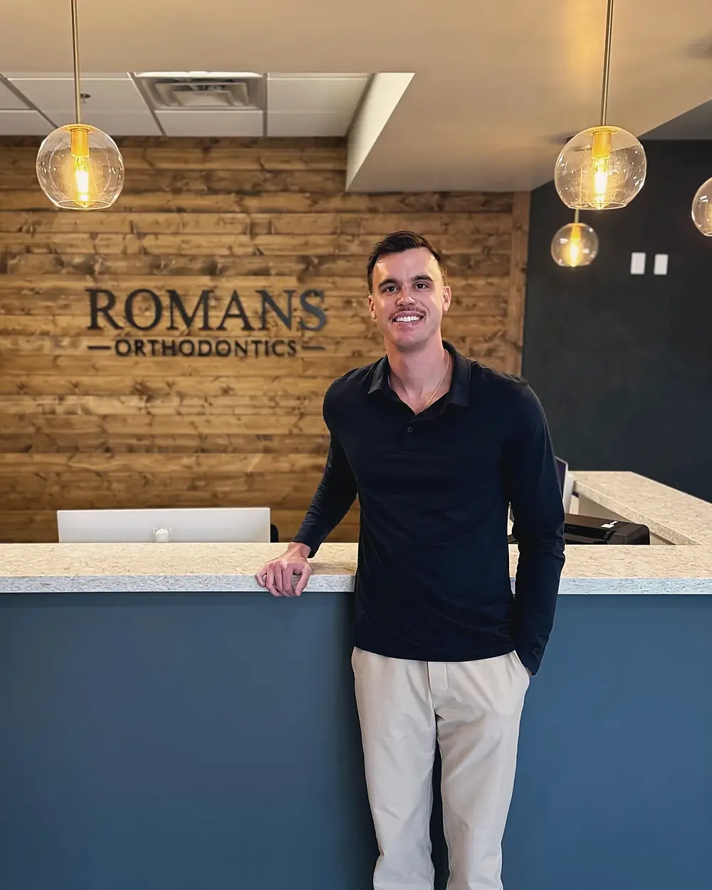
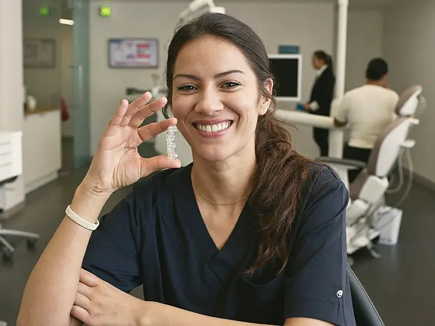
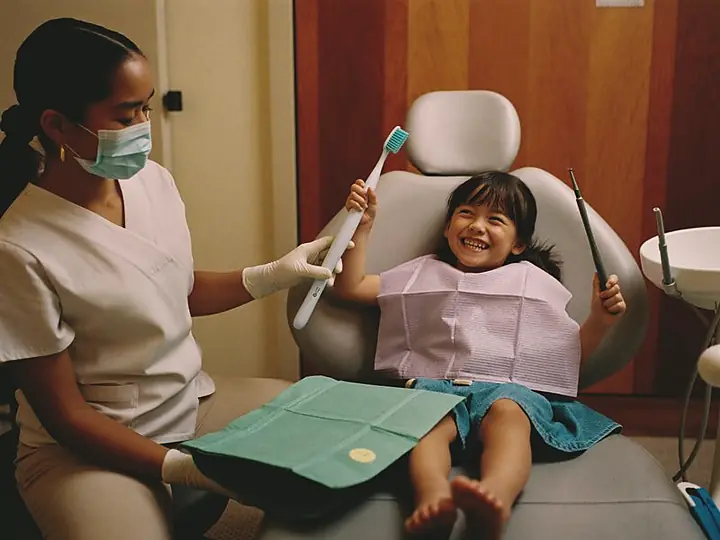

Anthem, Arizona · Live a little, smile a lot
Braces & Invisalign in Anthem for every age in your family
Dr. Nicholas Romans, board-certified orthodontist. A solo practice, so the one who plans your treatment is the one who finishes it.

-
01 / Certified
Board-certified orthodontist
-
02 / Degrees
DMD,
MSD -
03 / Experience
7+ years in orthodontics
-
04 / First visit
Free
consultation

Meet your orthodontist
Dr. Nicholas Romans
Dr. Romans opened his own practice here in Anthem, though he has been straightening teeth a good while longer than that: more than 5,000 patients over his career so far. He treats kids, teens and adults in the same office, which is how a family ends up with one orthodontist instead of three. Come by and say hello before you decide anything.
- Board-certified orthodontist
- DMD, Doctor of Dental Medicine
- MSD, Master of Science in orthodontics
- More than 7 years dedicated to orthodontics, including advanced specialty training
- Solo practice, so the orthodontist who plans your treatment is the one who finishes it

One office for the whole family
Kids in their first braces, teens in aligners, parents finally doing the thing they put off, grandparents in for a retainer check. Booking one practice for all of it saves a working parent more time than any single appointment ever will.
See braces for kids →
Your insurance, checked while you sit there
We take major PPO plans and check them on the spot rather than mailing you an estimate. FSA and HSA dollars are welcome, and if there is a balance left we finance it in house. The consult is free, and the number you leave with is exact.
See how insurance and financing work →
Ground level, with parking out front
Suite D120 on West Anthem Way, at street level with reserved spaces by the door. No garage, no elevator, no wrestling a stroller down a stairwell on the way to a routine adjustment.
Get directions to the Anthem office →Live a little, smile a lot
Ready to come & say hello?
A free consultation with Dr. Romans, right here in Anthem.
Book a free consultCertifications & affiliations
-
Dr. Nicholas Romans, ABO-Board Certified™
-
Dr. Nicholas Romans, member
-
Clear aligner provider
-
Saint Louis University
Orthodontic residency · MSD
-
A.T. Still University
Doctor of Dental Medicine
-
St. Louis Children’s Hospital
Craniofacial cleft & palate fellowship
Reviews
What Anthem families are saying
-
I recently saw Dr. Romans for the first time and was very impressed with his warm personality and his ability to make me feel at ease. I’ve never been to an orthodontist before…
Janice Fortier
-
We had a great consultation with Dr Romans. He was thorough and kind. My daughter felt really comfortable and we thought his treatment plan was solid and fairly priced.
Mariel Schmitt
-
I have nothing but good things to say about this office and team. They went above and beyond to resolve my insurance claim and talk me through the process. The space is professional and clean. Kazja and Dr Romans are amazing!
Isabelle McGhee
-
Very excited to get started with my treatment! I have a difficult case with a missing tooth and canine stuck high up, but Dr Romans coordinated everything with the periodontist and general dentist. Gorgeous office and well run.
Halle Herkelman
-
Dr. Romans has a way of explaining things clearly and honestly. You never feel rushed, and it’s obvious he wants people to make informed decisions about their care.
Bijan Shemirani
-
As a fellow orthodontist, I had the privilege of working with Dr. Romans for over 2 years. Dr. Romans knows how to deliver a beautiful smile AND a healthy bite that will last a lifetime…
Jacob Shelley
Treatments
What we treat in Anthem
-

Braces for Kids
Metal and clear braces for growing smiles, checked at every stage. We keep visits short and explain each one to you and your child.
See the treatment → -
Braces for Adults
It is never too late, and plenty of our patients are grown-ups. Discreet options that fit around work and family life.
See the treatment → -

Invisalign® & Clear Aligners
Removable clear aligners planned with digital scans, no putty impressions. Good for teens and adults who would rather not wear brackets.
See the treatment → -

Early Treatment
A first look around age seven, when small problems are still small. Often the visit ends with nothing to do but check back.
See the treatment → -

Retainers & Retention
The part that keeps the result. Fitted retainers, replacements, and a plan for wearing them that people actually follow.
See the treatment → -
Airway & TMJ
Assessment of breathing, bite and jaw comfort as part of your evaluation. Sometimes the jaw, not the teeth, is the thing to treat.
See the treatment →
Our address